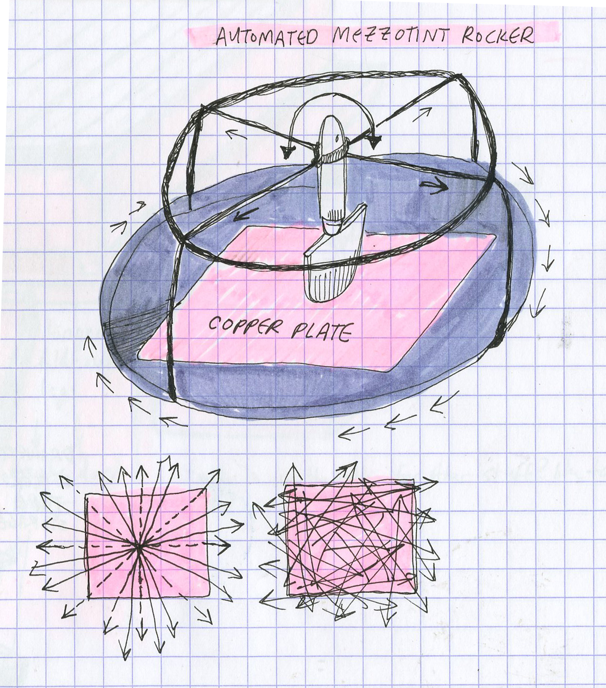
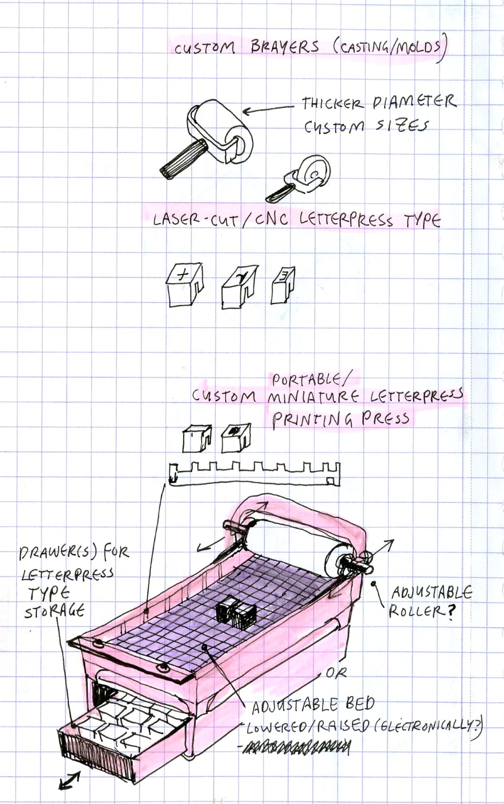

<!DOCTYPE html>
<html lang="en">
<html>
<head>
<style>
.p1 {
  font-family: "Times New Roman", Times, serif;
}

.p2 {
  font-family: Arial, Helvetica, sans-serif;
}

.p3 {
  font-family: "Lucida Console", "Courier New", monospace;
}
</style>
</head>
<body>

</body>
</html>


<title>PS70: Intro to Digital Fabrication </title>
<link href="https://cdn.jsdelivr.net/npm/bootstrap@5.1.1/dist/css/bootstrap.min.css" rel="stylesheet">
<link href="../style.css" rel="stylesheet">


<nav class="navbar navbar-expand-sm navbar-light bg-light">
  <div style="align-items: left; justify-content:left;" class="container-fluid">
    <h3 class="nav-title"> PS70: Intro to Digital Fabrication</h3>
    <div class="navbar-nav">
      <h4></h4>
      <h4><a class="nav-link" href="../index.html">Home</a></h4>
      <h4><a class="nav-link" href="../about.html">About</a></h4>
    </div>
  </div>
</nav>

<body>


<xmp style="display:none;">
<br> 
<p class="p3">

 <b>#### Final Project Proposal(s) </b>

In general, my ideas for the final project revolve around different types of equipment for a small or at-home printmaking studio to do relief and etching processes that require little to no use of solvents or acids. <br>This equipment would likely be most helpful to people who <i> do </i> have access to academic/industry shops that have CNC routers/laser engravers/etc, but hopefully this would also be accessible to printmakers who do not have access to a print studio:

 <b>##### Automated Mezzotint Plate Rocker </b>

<i> Context: </i>

<sub> Example of a mezzotint (artist Erin Wohletz): </sub> <br>  

Traditional mezzotints are created by using a  <a href="https://eclyons.com/index.php?main_page=product_info&cPath=12&products_id=263">specialized metal tool<a/>  to create a layer of rough indentations into a metal plate (typically copper) that will print completely opaque. <br> This is referred to as "rocking the plate" The roughened surface is then gone back into with burnishing tools to create lighter values. 

<a href="https://clarklibrary.ucla.edu/blog/seventeenth-century-printmaking-mezzotint/">Brief introduction/definition of the mezzotint process<a/> 

The prep-work to create a mezzotint print is painstakingly time-consuming - most mezzotint prints are small in scale as rocking even a small, 5" x 5" plate takes at least 3 hours. 


 

Automated plate rocker where it will mechanically rotate the plate and move the rocker tool around to rock any size plate (that will fit on the base) - much like a slow cooker, you can set it and forget it. <br>

More thoughts: programming it to act on a timer, or rocking it in different types of patterns. Also possibly fabricating my own mezzotint rocker tool since the rocker tool is very expensive (~$200 for a 5" long rocker)

##### <b> Portable/Miniature Letterpress Proofing Press </b>

 

Portable letterpress proofing press. Some changes from the standard printing press that I'd like to explore:  adjustable bed that lowers or raises based on the height of what's placed on it (so it can print more than letterpress type), a larger diameter roller to get more pressure while printing. Built in drawers/storage for letterpress type. 

Other DIY presses/inspiration: 

<a href="https://www.briarpress.org/41110">Winking cat press wooden proofing press<a/> 

<a href="https://www.youtube.com/watch?v=5wa0a3vTafE">This Designed That letterpress proofing press with metal components<a/>

<a href="https://competition.adesignaward.com/gooddesign.php?ID=39281">Bill Ritchie Miniature etching press<a/>

<a href="https://www.thearm.org/perohaus/showcard-model-b-proof-press">Showcard model press<a/>

</p>

</xmp>
</body>

<script src="../strapdown.js"></script>
<script src="https://cdn.jsdelivr.net/npm/bootstrap@5.0.2/dist/js/bootstrap.bundle.min.js" ></script>

</html>